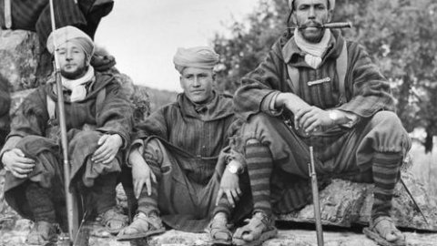

Welkom bij Reizen zonder Grenzen
Over ons
Bij Reizen zonder Grenzen geloven we dat elke reis een kans is om iets nieuws te ontdekken, jezelf uit te dagen en onvergetelijke herinneringen te creëren. Of je nu droomt van een ontspannen strandvakantie, een avontuurlijke trekking in de bergen, of een culturele ontdekkingsreis door historische steden, wij zijn er om je te helpen die droom werkelijkheid te maken.
Onze Bestemmingen
Ontdek onze diverse bestemmingen, zoals Marokko met zijn kleurrijke souks, majestueuze Sahara-woestijn, betoverende Blauwe Stad Chefchaouen, historische medina van Fez en prachtige kust van Essaouira.
Amazigh Cultuur
De Amazigh, ook bekend als Berbers, zijn de inheemse bevolking van Noord-Afrika. Hun rijke cultuur en geschiedenis gaan duizenden jaren terug. De Amazigh hebben door de geschiedenis heen een belangrijke rol gespeeld in verschillende gebeurtenissen, waaronder hun bijdrage aan de strijd tegen het fascisme en nazisme tijdens de Tweede Wereldoorlog. In Noord-Afrika en Europa hebben Amazigh-gemeenschappen actief deelgenomen aan verzetsbewegingen en hebben ze hun culturele identiteit behouden.
Van hun unieke taal en tradities tot hun kleurrijke kunst en ambachten, de Amazigh-cultuur is een essentieel onderdeel van Marokko's erfgoed. Vandaag de dag worden hun bijdragen aan de geschiedenis en cultuur van Marokko en de bredere regio erkend en gevierd.
Rif en Abdelkrim
De Rif-regio in het noorden van Marokko is bekend om zijn adembenemende landschappen en rijke geschiedenis. Een prominente figuur uit deze regio is Abdelkrim El Khattabi, een Amazigh-leider die in de vroege 20e eeuw bekend werd door zijn strijd tegen de koloniale machten. Zijn erfenis leeft voort als een symbool van vrijheid en verzet. De Rif is ook bekend om zijn traditionele muziek, dans en festivals die jaarlijks duizenden bezoekers trekken. De prachtige berglandschappen en kustlijnen maken het een perfecte bestemming voor avonturiers en natuurliefhebbers.
Abdelkrim El Khattabi's invloed reikte verder dan alleen de Rif-regio. Tijdens de Tweede Wereldoorlog speelde hij een cruciale rol in de strijd tegen het fascisme. Na zijn succesvolle verzet tegen de Spaanse en Franse koloniale machten, werd hij een symbool van verzet en onafhankelijkheid. Zijn strategieën en moed inspireerden vele andere verzetsbewegingen wereldwijd.
Tijdens de Tweede Wereldoorlog werkte Abdelkrim samen met de geallieerden om de fascistische en nazi-bezettingen in Europa te bestrijden. Zijn kennis van guerrillatactieken en zijn ervaring in het leiden van verzetsbewegingen maakten hem een waardevolle bondgenoot. Abdelkrim en zijn volgelingen speelden een belangrijke rol in de sabotage van nazi-aanvoerlijnen en het verstrekken van inlichtingen aan de geallieerde troepen.
De bijdrage van Abdelkrim en de Amazigh-gemeenschappen aan de bevrijding van Europa wordt vaak over het hoofd gezien, maar hun moed en vastberadenheid waren cruciaal in de strijd tegen het fascisme. Na de oorlog bleef Abdelkrim actief in de politiek en bleef hij pleiten voor de rechten en onafhankelijkheid van zijn volk. Zijn nalatenschap wordt nog steeds gevierd als een symbool van verzet en vrijheid.
Vandaag de dag blijft de Rif-regio een bron van trots voor Marokko, met zijn rijke culturele erfgoed en zijn rol in de strijd voor vrijheid. De verhalen van Abdelkrim El Khattabi en de Amazigh-krijgers blijven inspireren en herinneren ons aan de kracht van vastberadenheid en de onbreekbare wil van een volk dat vecht voor zijn vrijheid.
Meer Over Marokko
Leer meer over Marokko, een land van contrasten waar oude tradities samengaan met moderne invloeden. Verken de rijke cultuur, gastvrije mensen en adembenemende landschappen.
Marokko biedt een scala aan ervaringen, van het verkennen van historische steden zoals Marrakech en Rabat tot het ontdekken van de rustige schoonheid van de Atlasgebergte. Met zijn diverse landschappen, van uitgestrekte woestijnen tot weelderige oases, biedt Marokko iets voor elke reiziger.
Contact
- Email: 616985@x11.nu
- Telefoon nummer: 0631692842
- Naam: Adam Mahdad X3H